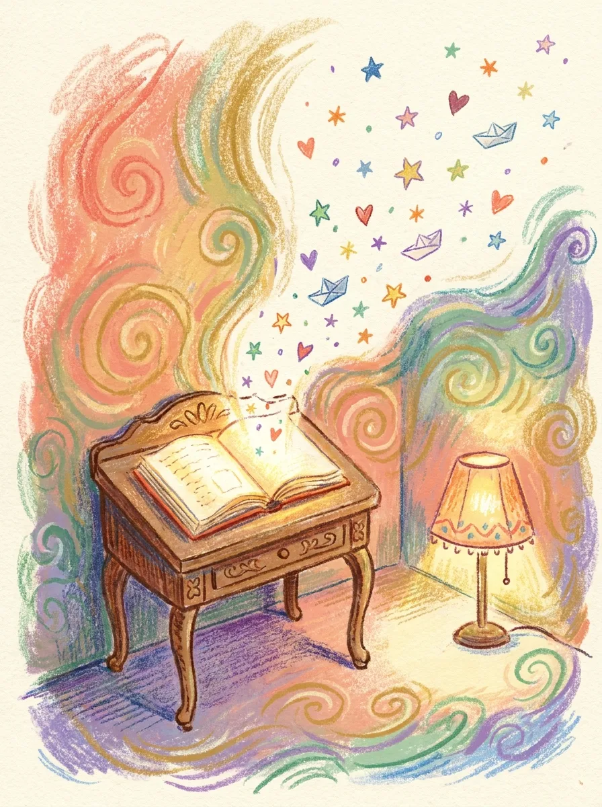
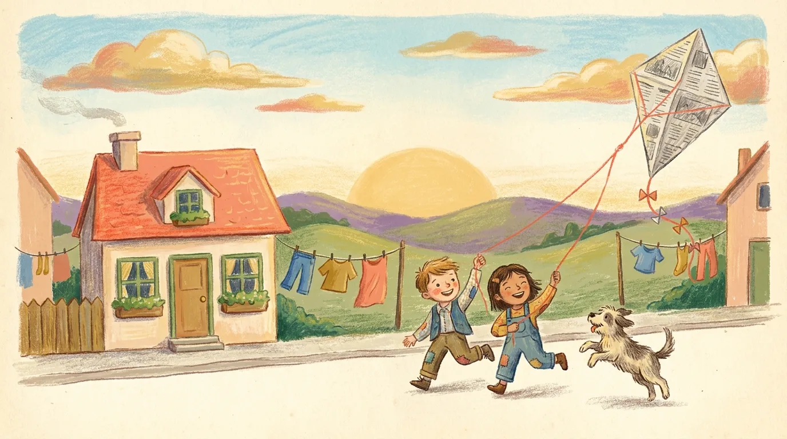
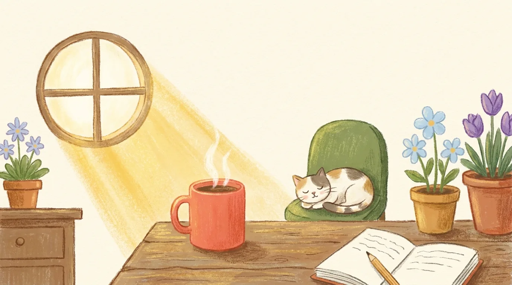
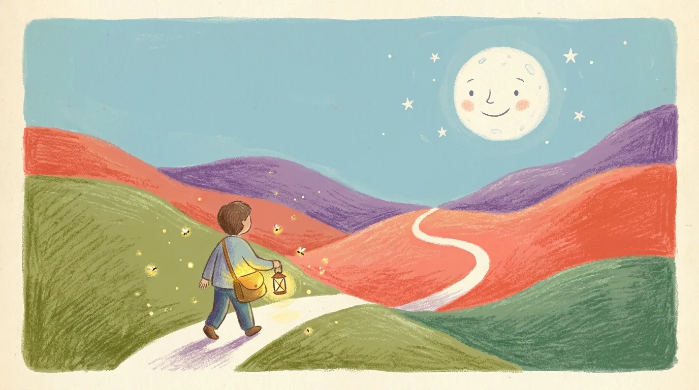
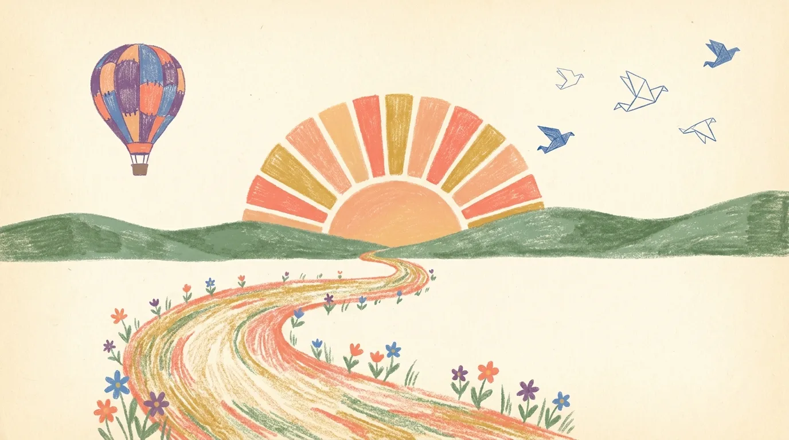

The Story of Mara
Your very own storybook in four chapters, told in your own words.

Dedication
For Mara Velasco — written from your own words, one honest answer at a time.
And for the porch in Cebu where the nets were mended, and the song that circled its same three bars.
Foreword
This is not a book about someone else. Every example in these pages, every case study, every turning point belongs to you, Mara. You wrote it without noticing, one honest answer at a time — between errands, in the blue minutes before sleep, in the voice notes you almost deleted.
Read it slowly. Some of what follows you said in passing; seen in print, it may say more than you intended. That is the point. A life examined at the right distance starts to look like what it has been all along — a story, with an author who is still holding the pen.
Four chapters wait ahead. The first three are memory; the last one is a map. You will recognize every word, because every word began as yours.
What Your Story Holds
Tap any chapter to jump straight to it.

Where You Began
“Never let a guest leave hungry.”— the rule of your childhood table
Every story is rooted somewhere, and yours begins in a narrow house by the harbor in Cebu. Mornings smelled of salt and frying garlic rice, and you could hear the jeepneys coughing up the hill before sunrise. Notice what your memory kept: not the furniture, not the weather, but smell and sound — the senses of someone already paying a particular kind of attention.
On the porch of that house, your grandmother taught you to mend fishing nets. You remember the rough twine and her humming — she never finished a song, just circled the same three bars. You return to that porch often; the memories we revisit are the ones still doing work in us. A net, after all, is a thing made almost entirely of holes, held together by patient hands. She was teaching you more than mending.
Then there are the people. Asked who shaped you most, you didn't hesitate: your older brother Danilo, who read everything and gave you his books a year before you were ready for them — which meant you were always reaching. The people who form us early set the questions we spend decades answering. Watch for his shadow in the later chapters; it falls across more pages than you might expect.
The world had words for you before you had words for yourself. People called you the quiet one who notices. Teachers said you daydreamed; your mother said you were listening to things other people walked past. Childhood labels are half observation, half assignment. Part of growing up is deciding which of those words to keep — and this one, you kept.
And there was a wish. You wanted to be a cartographer. You loved that someone's job was to say: this is where we are. The wish became photography, which is the same job with light. Early dreams rarely die; they change clothes.
My grandmother taught me to mend fishing nets on the porch. I remember the rough twine and her humming — she never finished a song, just circled the same three bars.

The Shape of Your Days
“The hour when the light goes gold and the water forgives the day.”— the part of the day that feels most like you
Here is an ordinary day in your life, as you describe it: it begins before the light does, with coffee and the soft mechanical click of memory cards being emptied of yesterday. Then errands, edits, the small administration of a working photographer's week. But read your day back the way a stranger would, and one thing leaps off the schedule — every evening, no matter the deadline, you walk to wherever the water is.
Within that routine, one moment stands apart. You said the part of the day that feels most like you is the hour when the light goes gold and you are standing somewhere with a camera, saying — without words — this is where we are. Hold onto that. It is a compass needle. Most plans for the future are really attempts to build more of that moment into more of the day.
When no one is watching and nothing is required, you turn to the same quiet work: noticing. Sorting photographs no client asked for. Re-reading the books Danilo handed down, still a year ahead of you in some way you can't name. The unobserved self is the most honest witness in this book, and yours keeps choosing attention, freely and repeatedly. That is as close to a definition of you as these pages will get.
And yet something in the current arrangement chafes. The commissioned work pays, but it points the camera where other people ask it to point. The harbor pictures — the ones that feel like mending nets — stay in a folder no one has seen. Naming what we tolerate is the first act of refusing it. You have now named it in writing.
I wanted to be a cartographer. I loved that someone's job was to say: this is where we are. The wish became photography, which is the same job with light.

What You Carry
“Even when there was little, the table stretched.”— a belief you keep against the grain
Everyone carries a private constitution — articles of belief that the people around them may not share. Yours has one article above the others: never let a guest leave hungry. Even when there was little, the table stretched. In a world that measures generosity carefully, you learned it as a law of physics: a table is a thing that stretches. Convictions held against the grain cost something to keep. That you have paid the cost, in lean months and crowded kitchens, says as much about you as the belief itself.
You also carry a quieter passenger: the fear that noticing is not the same as mattering — that the quiet one who watches the room will one day discover the room never watched back. Fear of this kind doesn't announce itself; it steers from the back seat, one small decision at a time. It is the reason the harbor folder stays closed. Seeing your own hand name it on a page is the beginning of taking the wheel back.
But keep this surprise close, too. The first time a stranger wept at one of your photographs — a picture of hands and twine, nothing more — you surprised yourself. It is evidence, admissible and first-hand, that your own forecast of yourself runs conservative. Whatever you believe your limits are, you have already been wrong about them at least once.
Listen to what people thank you for. They thank you for seeing them — for the photograph that caught what they could not say, for the chair found at a full table, for the question no one else thought to ask. Gratitude, repeated, is the world telling you where your gift sits. And when love is asked of you and you do it well, it looks like a meal, a mended thing, an unhurried hour of attention.
Never let a guest leave hungry. Even when there was little, the table stretched.

This Is Where We Are
The title of this chapter is yours. You wrote it.
Begin with the honest forecast. If nothing changed, you said, the commissions would keep coming, the folder would keep growing, and the porch in Cebu would keep receding — visited in memory, photographed never. A projection like that is not a verdict. It is a draft, shown to the author early enough to revise. Consider it shown.
Given permission to fail, you knew at once what you would attempt: a photo book of the harbor — the net-menders, the long tables, the gold hour — with your grandmother's unfinished song as its title. Read that again, slowly. The only condition you required was the continued pride of people who would, almost certainly, be proud of you for attempting it at all. The permission you were waiting for has, in other words, already been granted.
You already know the direction of travel. More mornings with the camera pointed where you choose; more long tables; more pages of the harbor folder out in the light. Less waiting for an invitation that was never going to come in writing. Most plans fail by being vague. This one has the rare advantage of being specific.
One thing stands between this chapter and the next, and you named it without being asked twice: the conversation with Danilo — the thank-you a year overdue, like every book he ever handed you. Postponed conversations gather interest. The cost of having it is fixed; the cost of waiting compounds.
And when you imagine being remembered — not in general, but by one particular person — you hope to be remembered the way you remember her: as someone who noticed, who mended, who made the table stretch. That sentence is the quiet thesis of this entire book. Every chapter before it has been an argument in its favor.
A photo book of the harbor — the net-menders, the long tables, the gold hour — with her unfinished song as its title.
Begin Again
You have reached the end of this book, Mara, but you will have noticed that it has no real ending — the final chapter is titled and outlined, and its author is reading this sentence.
Answer the questions again in a year and this book will be different, because you will be. Perhaps the harbor folder will have a spine and a cover by then. Perhaps the song will finally get its fourth bar. That is the only promise SOURCE makes: the story is yours, and it is still being written.
Until then — keep noticing. It was never daydreaming. Your mother was right: you were listening to things other people walked past, and now there is a book to prove it.
Every life is a book.
Most are never written down.
“The Story of Mara” was composed entirely from Mara Velasco's own answers to the SOURCE questionnaire — a harbor in Cebu, an unfinished song, a brother's borrowed books, and a table that always stretched. No two copies of this book exist, because no two lives do.
SOURCE · your story, in your own words